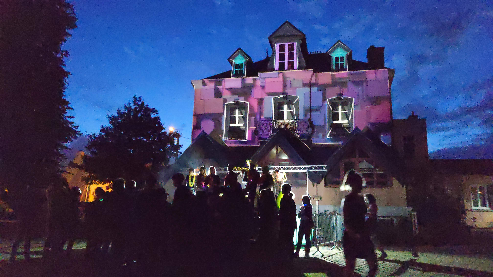
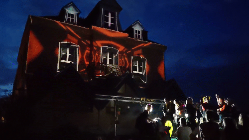

Le projet
Chaque année, ma ville organise une soirée de fin d'année pour les collégiens au début des vacances d'été. J'étais présent à l'organisation de la première édition en 2011 en tant que bénévole, et depuis j'y participe chaque année en tant que bénévole, animateur ou intervenant. En 2021, j'ai eu carte blanche pour proposer un projet de projection sur la façade du bâtiment principal pendant l'événement.

📽️ L'installation
L'idée est de projeter des vidéos sur le bâtiment en prenant en compte son architecture pour le rendre vivant et l'intégrer au décor : on appelle cette technique le « mapping vidéo ». Mon idée a été de découper le bâtiment en trois éléments : la façade principale, les fenêtres externes et la fenêtre centrale. Ainsi, chacune de ces parties pouvait être gérée indépendamment. Les fenêtres étaient reliées au tempo sonore ambiant pour ajuster la vitesse et la fréquence des animations en fonction de la musique en temps réel. La façade présentait une boucle vidéo que les jeunes les plus curieux pouvaient choisir et modifier pendant la soirée parmi une sélection, directement depuis le stand de régie vidéo où j'étais présent.

📣 Ils en parlent
Retour et photos de l'événement sur le site officiel de la ville.
Vidéo sur la page Facebook officielle de la ville.